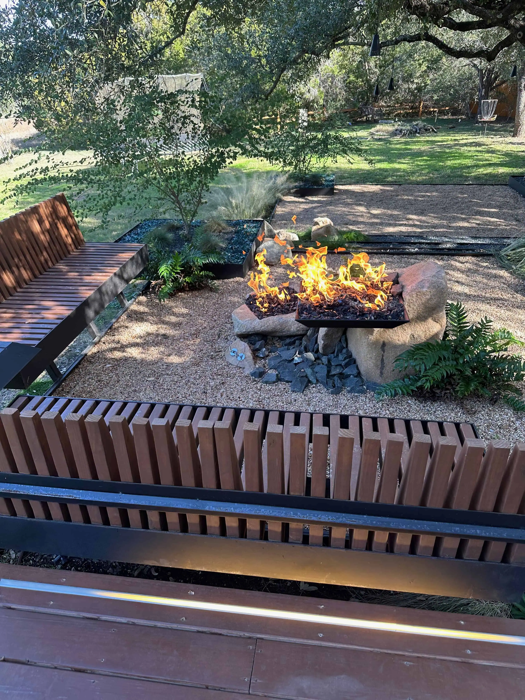
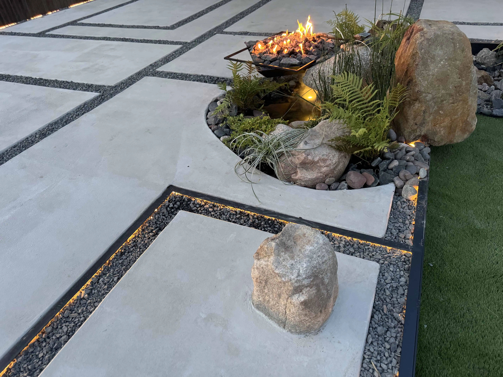

Retaining walls are one of the most common hardscape features in Central Texas. The Hill Country terrain practically demands them — sloped lots, erosion control, terraced yards, pool surrounds, and driveway cuts all require some form of wall. The permit question comes up on almost every project we bid.
Here is the straightforward answer, followed by the exceptions that trip people up.
Under 4 feet: No building permit required in Austin, as long as the wall is not supporting a surcharge (driveway, structure, or heavy load on top) and is not in a flood hazard area.
4 feet or taller: A building permit is required, and the wall must be designed by a Texas-licensed professional engineer with stamped structural drawings.
Height is measured from the bottom of the footing to the top of the wall — not from visible grade. A wall that looks 3 feet tall but has a 14-inch buried footing is actually 4 feet and needs a permit.
This comes directly from the City of Austin’s building permit exemption list. The exact language: “a retaining wall that is not over 4 feet (1,219 mm) in height, unless supporting a surcharge or located within a flood hazard.”
When You Need a Permit (Even Under 4 Feet)
The 4-foot exemption has important exceptions. You still need a permit if any of these apply:
- The wall supports a surcharge. If a driveway, patio, parking area, or any structure sits on top of or directly behind the wall, it is considered a surcharged wall and requires engineering regardless of height
- The property is in a flood hazard area. FEMA flood zones cover more of Austin than most people realize. Check your property at the City of Austin’s floodplain map before assuming you are exempt
- The wall affects drainage. If your wall changes how water flows across your property or onto a neighbor’s property, the city may require a drainage plan
- Terraced or stacked walls. Two 3-foot walls stacked close together can be treated as a single 6-foot wall by the city, depending on spacing. Generally, walls need to be separated by a distance equal to or greater than the height of the lower wall to be considered independent
- The wall is near a property line or easement. Walls built in utility easements or public right-of-way are never exempt

What the Permit Process Looks Like
If your wall is over 4 feet or triggers one of the exceptions above, here is what to expect:
- Hire a Texas-licensed structural engineer. They will design the wall based on soil conditions, water pressure, surcharge loads, and local geology. Engineering fees typically run $1,500–$5,000 depending on complexity
- Submit engineered plans to the City of Austin. Plans must include a current property survey, structural calculations, drainage design, and a site plan showing the wall location relative to property lines and easements
- Wait for permit approval. Simple retaining wall permits can take 2–4 weeks. Complex projects involving drainage or site development permits take longer
- Build with inspections. The city inspects at multiple stages: excavation/footing, reinforcement placement, drainage system, and final construction
Retaining Wall Costs in Austin
The wall itself is only part of the cost. Here is what Austin retaining wall projects typically run:
- Concrete block walls: $25–$45 per square face foot for standard segmental block, installed
- Natural stone walls: $35–$60 per square face foot. Limestone is the most common choice in Austin
- Poured concrete walls: $30–$50 per square face foot, plus forming costs. Best for tall walls or heavy surcharge
- Steel and timber hybrid walls: $40–$70 per square face foot. We use hot-rolled steel with treated timber or concrete panel infill on many projects
- Boulder walls: $20–$40 per square face foot for stacked boulder walls under 4 feet. Less expensive but limited in height
Add $1,500–$5,000 for engineering if the wall needs a permit. Add $500–$2,000 for the permit itself. And always add a proper drainage system behind the wall — a retaining wall without drainage is a retaining wall that will fail. French drains behind a wall typically add $15–$30 per linear foot.


Common Retaining Wall Mistakes in Austin
We get called to fix failed retaining walls regularly. The most common issues we see:
No drainage behind the wall. This is the number one reason retaining walls fail in Central Texas. Our clay soil holds water. When it rains, hydrostatic pressure builds behind the wall. Without weep holes or a French drain, the wall eventually bows, cracks, or topples. Every wall we build includes a drainage system — gravel backfill, perforated pipe, and proper discharge.
Ignoring the footing measurement. Homeowners build a wall that looks 3.5 feet tall, but the buried footing pushes total height past 4 feet. If a code inspector sees it, you are looking at a stop-work order, a retroactive permit, and potentially an engineer-mandated rebuild.
Terracing without proper spacing. Terracing is actually a smart strategy — splitting a tall grade change into two or three shorter walls under 4 feet each lets you avoid permits entirely and often looks better than one massive wall. The key is spacing them far enough apart. As a general rule, the horizontal distance between terraced walls should be at least equal to the height of the lower wall. Get that spacing right and each wall is treated independently — no permit, no engineer. Get it wrong and the city treats them as one wall, which means you need both.
Building in an easement. Utility easements and drainage easements are more common than people realize. A retaining wall built in an easement can be ordered removed at the owner’s expense, regardless of permits.

Austin vs. Surrounding Cities
Permit rules vary by jurisdiction. If your property is in the City of Austin limits, the rules above apply. But the suburbs have their own codes:
- Round Rock: Similar 4-foot threshold. Permits processed faster than Austin, typically 1–2 weeks
- Cedar Park: 4-foot threshold applies. Check with Williamson County for properties in the ETJ
- Pflugerville: 4-foot rule. Pflugerville has been growing fast and permit timelines can vary
- Bee Cave & Lakeway: More restrictive in some cases due to Hill Country terrain and environmental regulations. Always check with the local building department
- Unincorporated Travis or Williamson County: County rules may differ from city rules. Engineering is still strongly recommended for any wall over 4 feet even if county codes are less strict
If you are unsure whether your property is in Austin city limits, the ETJ (extraterritorial jurisdiction), or another municipality, check the City of Austin’s jurisdiction map or call 311.
Other Permit-Exempt Outdoor Projects
While we are on the subject, here are other common landscaping projects that do not require a permit in Austin:
- Fences under 7 feet (unless in a flood hazard area)
- Detached decks under 200 square feet that are no more than 30 inches above grade and not attached to the house
- Sidewalks, driveways, and concrete flatwork not in the public right-of-way
- One-story detached structures under 200 square feet (sheds, pergolas) with no plumbing and under 15 feet tall
- Prefabricated pools under 24 inches deep
Get a Free Retaining Wall Estimate
Every retaining wall project depends on the site — soil type, slope, height, what the wall is supporting, and whether your property has any floodplain or easement restrictions. We handle engineering coordination, permits, and construction so you do not have to manage separate contractors.
See our signature projects for examples of retaining wall work, or request a free consultation to get a custom quote for your property.